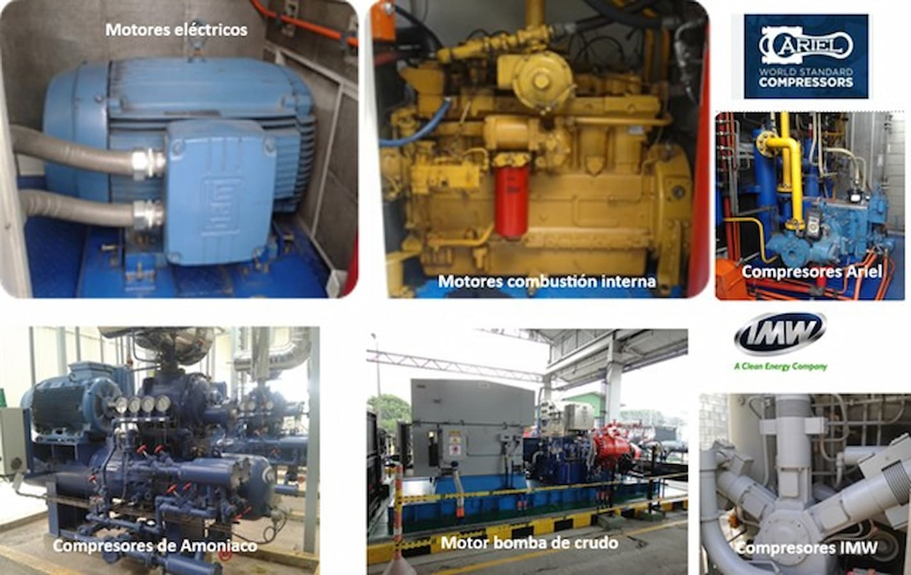
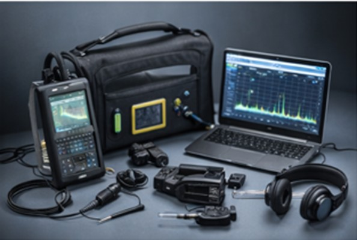

Diagnóstico avanzado para equipos rotatorios críticos del sector industrial.

El análisis de vibraciones permite determinar mediante mediciones periódicas el estado del desgaste de los elementos rodantes, previniendo paros no programados y evitando pérdidas económicas por fallas en sistemas industriales.
El balanceo dinámico es una práctica técnica normalizada orientada a reducir la carga en cojinetes y disminuir el ruido de funcionamiento de equipos rotatorios, mejorando su confiabilidad y prolongando su vida útil.
Inspección vibracional en equipos rotatorios industriales.

Diagnóstico espectral avanzado mediante análisis FFT.

Monitoreo predictivo y evaluación de condición en maquinaria crítica.
Nuestros diagnósticos se fundamentan en estándares internacionales como ISO 10816 e ISO 20816, que establecen criterios técnicos para evaluar la severidad vibracional en maquinaria rotatoria. Aplicamos metodologías basadas en análisis espectral FFT, monitoreo predictivo y evaluación de condición.